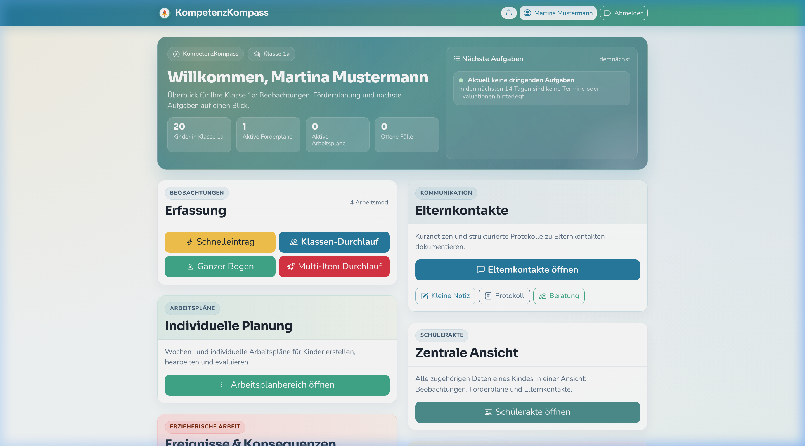
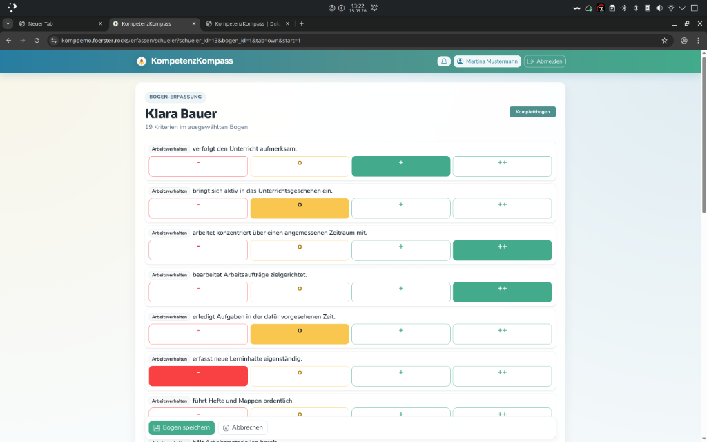
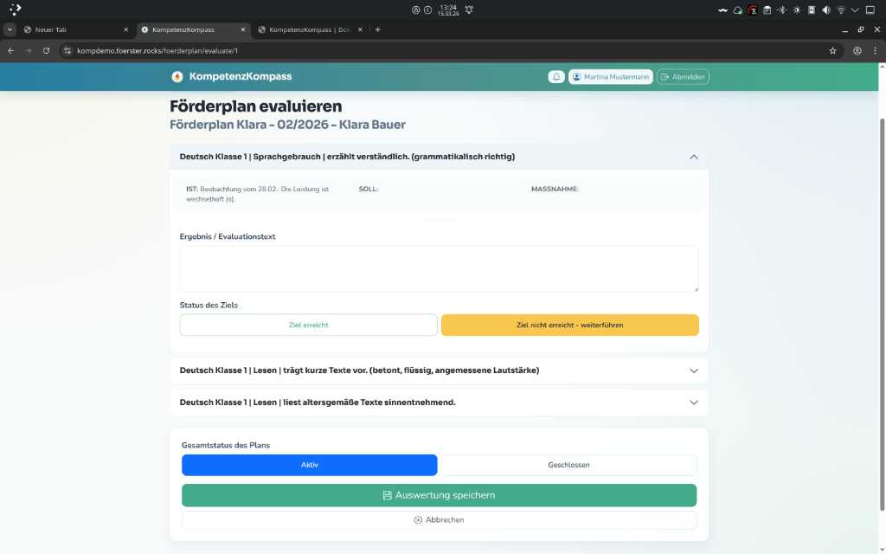
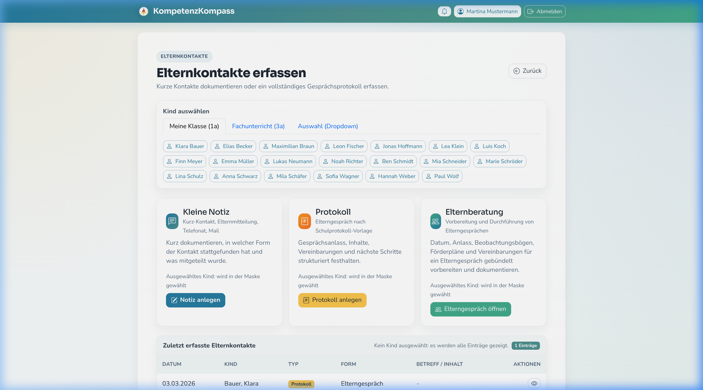
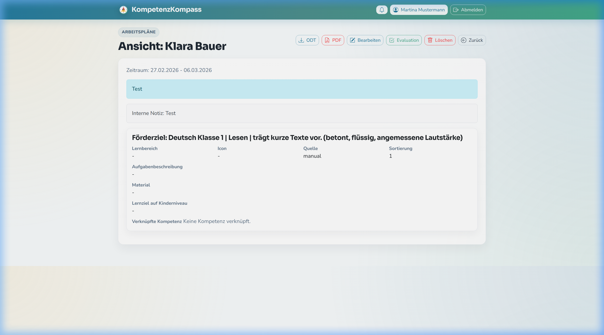
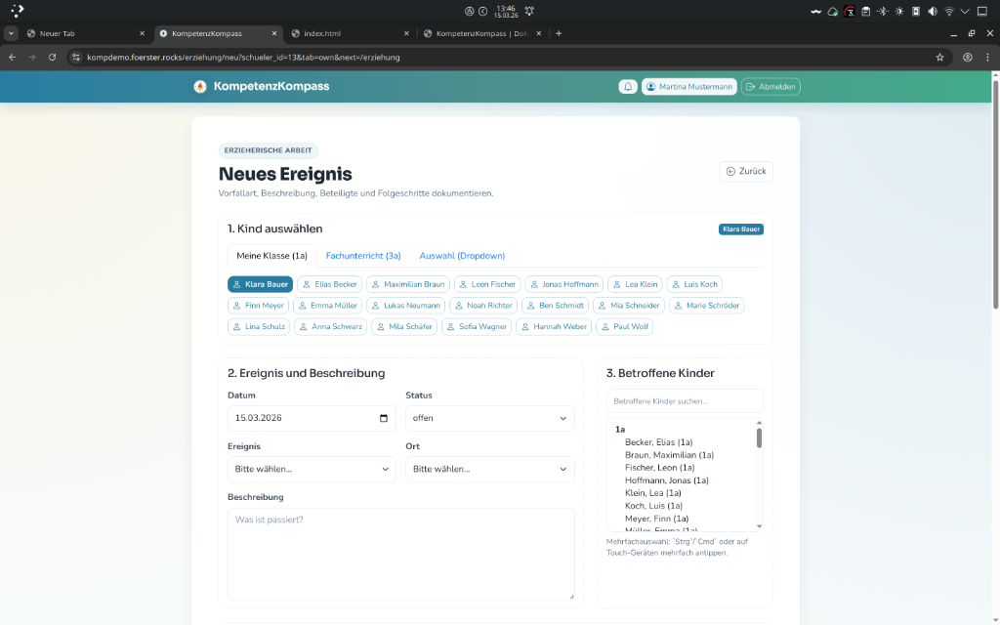
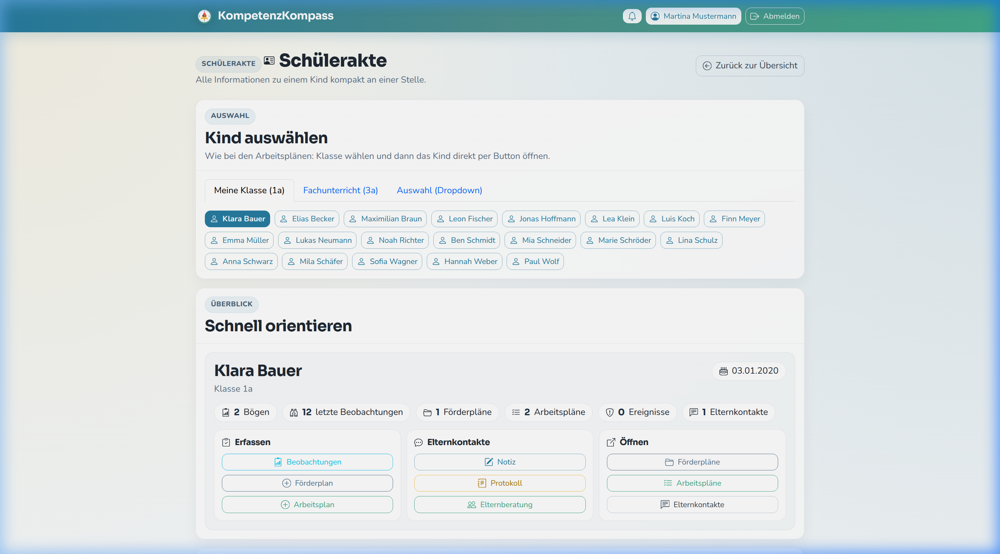

KompetenzKompass ist die ganzheitliche Lösung für Beobachtung, Förderung und Dokumentation in der Grundschule. Intuitiv, rechtssicher und praxisnah.

Der KompetenzKompass kann kostenlos genutzt werden. Entwickelt von Lehrkräften für Lehrkräfte. Der gesamte Quellcode ist auf GitHub verfügbar.
Schnelleintrag, Klassendurchlauf oder ganzer Bogen - flexibel im Schulalltag.
Automatisierte Vorschläge und einfache Evaluation für passgenaue Förderung.
Strukturierte Protokolle und Vorbereitungshilfen für Beratungsgespräche.
Individuelle Wochenpläne mit Aufgabenbibliothek und Evaluationsfunktion.
Vorfälle schnell erfassen und pädagogische Maßnahmen transparent dokumentieren.
Alle Informationen an einem zentralen Ort - übersichtlich und griffbereit.
Dokumentieren Sie Lernstände und Verhalten so, wie es in Ihre Situation passt. Die App unterstützt Sie mit drei flexiblen Modi:

Erstellen Sie fundierte Förderpläne ohne hohen Zeitaufwand. Die App verknüpft Ihre Dokumentation direkt mit der Planung:

Sorgen Sie für Transparenz und Professionalität in der Kommunikation mit den Erziehungsberechtigten:

Differenzierung leicht gemacht – erstellen Sie passgenaue Lernangebote:

Dokumentieren Sie Vorfälle und pädagogische Konsequenzen lückenlos und transparent:

Der "Single Point of Truth" für die individuelle Entwicklung jedes Kindes:

Ihre Daten sind bei uns in sicheren Händen. Wir setzen auf höchste Standards für den Schutz sensibler Schulinformationen.
Durch die Möglichkeit des Self-Hostings bleiben alle Daten auf Ihren eigenen Servern oder in Ihrer vertrauenswürdigen Schulcloud.
Ein intelligentes Berechtigungssystem stellt sicher, dass jede Lehrkraft nur auf die Daten zugreifen kann, die sie für ihre Arbeit benötigt.
Wir nutzen aktuelle Verschlüsselungstechnologien, um Ihre Dokumentation vor unbefugtem Zugriff und Missbrauch zu schützen.
Nutzen Sie unsere kostenlose Demoinstanz, um alle Funktionen kennenzulernen.